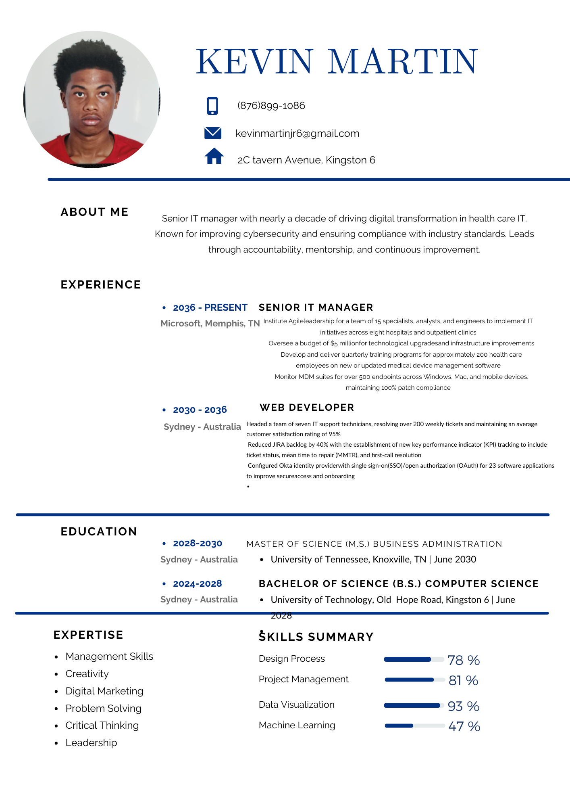

My Resume
Vision Statement
"My vision is to harness my passion for computer science to create innovative solutions that make a difference in everyday life. I aim to grow as a student and a person, balancing my academic pursuits with strong family connections and friendships. I envision a future where I can collaborate with others to develop technology that is not only cutting-edge but also accessible and beneficial to everyone. By staying curious and open-minded, I hope to inspire those around me and contribute to a supportive community that values learning and growth."
Mission Statement
"As a laid-back yet strong-willed individual, I am dedicated to balancing my passion for computer science with my commitment to family and personal growth. I strive to cultivate a supportive environment where creativity and innovation thrive, while remaining grounded in my values. My mission is to leverage my technical skills to make a positive impact in the world, all while nurturing meaningful relationships and fostering a sense of community. I believe in the power of collaboration and the importance of staying true to oneself, as I navigate both my academic journey and my role as a family member."
Career Acquirements